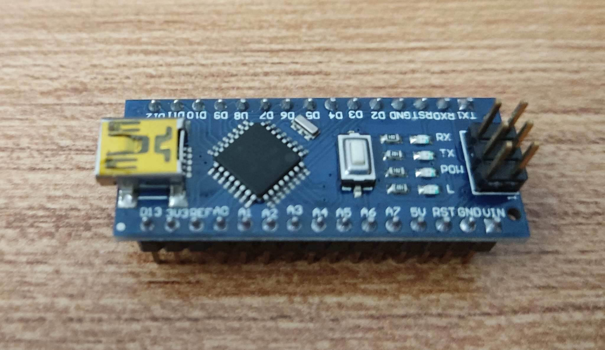
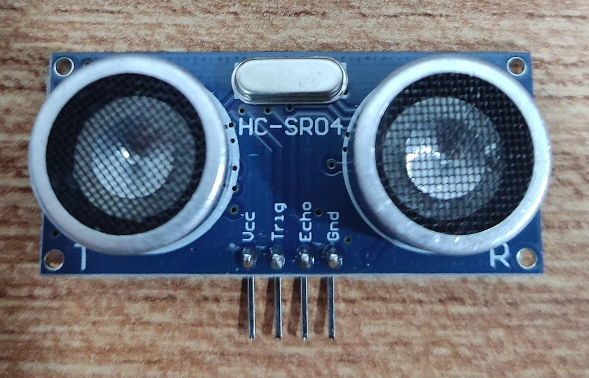
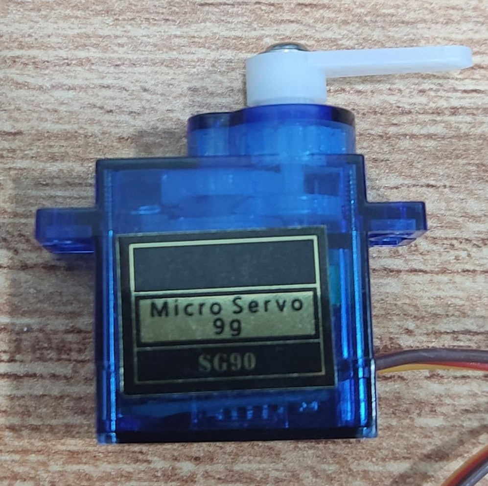
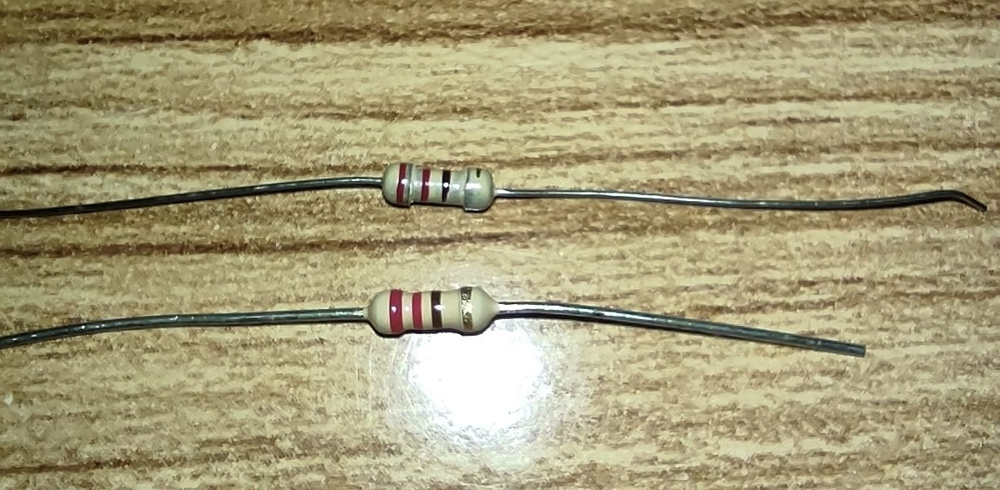

Final Project Idea:
My final project is a Trash-Bot, that would open and close automatically, with the help ultrasonic sensors acting as a input device and a servo motor acting as a output device.
The ultrasonic sensor would sense when there is a hand near the sensor, and send a signal for the servo to turn and open the box.
My target audience is the people who want a hands-free box opening experience.
This projects takes inspiration from the Arduino Project Hub .
My project is slightly different, as it uses laser cut plywood to create box, has a 3D-printed holder for the ultrasonic sensor, and improves on the overall cleanliness of the design.
Project Sketch:
insert rough sketch here + explain; do later
First Draft (Fusion360):
I quickly did a sketch of what it would look like. Keep in mind that this is the first draft, and some parts that have been 3D modelled may or may not be used in the final product. This also allows me to get an idea of what parts i would need.
Parts needed (Bill Of Materials):
| Part | Quantity | Remarks/Photos |
|---|---|---|
| Arduino Nano | 1 |  |
| Ultrasonic Sensor (HC-SR04) |
1 |  |
| Mini Servo Motor (SG90) |
1 |  |
| LEDs | 1 | |
| Resistors | 2x 220Ω |  |
| Wires |  |
|
| Breadboard | 1 |  |
3D Printed Part(s):
Using the above dimensions as a reference, i modelled a holder for the ultrasonic sensor in Fusion360.
This would be mounted at the bottom, facing upwards.
The user would then be able to wave their hand over the sensor and open it hands-free.
The bottom is left open for easy mounting and troubleshooting (if needed). There is additonal material behind the slope to hide the wires. It also acts as a mounting surface for it to couple to the laser cut pieces
Finished Product:
|
Top View |
Side View |
Bottom View |
The print was succesful the first time, albeit not having the best print quality. The wording on the top surface was not as clean as expected. No reprinting is required.
Test fitting the Ultrasonic Sensor:
|
Top View |
Side View |
Back View |
When test-fitting the ultrasonic sensor, I found that there is enough friction from it being a snug fit. Therefore no glue/extra materials were needed to keep the sensor in place. There is also plenty of clearance for the pin headers (and the wires to be connected later).
Laser Cut (2D Cutting/Engraving):
Using Fusion360, I was able to make a parametric finger-jointed box with a lid, rounded corners and a compartment for the Arduino and relevant eletronics to be stored.
I referenced this video tutorial (embedded below) to help me create the rounded edge, commonly known as living hinges. (This is not the final model.)
Laser Cut pieces (1st cut).
Problems Faced:
Since the living hinges were very thin, it became very fragile. When bending it for the first time, the living hinge started to crack and break.
This negatively affects the overall structural intergrity of the hinge.
Another issue that arised, was the fact that the pattern i used for the living hinge
cuts throught the material at each gap, and makes the hinge more fragile that it already is, which further reduced the structural intergrity.
Cracking at fragile points.
Due to my oversight, there are some pieces that were cut wrongly. These pieces include the bottom piece, as well as the back panel.
There is also no mounting point for the servo motor.
Excess material causes interference when assembling; needs to be removed.
Both fingers extrude at the same position, and causes interference when assembling.
Solutions to aforementioned problems:
To get the bottom piece to fit, I was able to use flush cutters to remove the excess parts (bottom piece). No recutting is neccessary.
After excess material is removed there is no more interference. Using flush cutters will give a smooth finish.
Instead of making changes to the back piece,I decided to remodel the front (piece with living hinge), as other changes had to be made as well. See below (2nd Modelling/Cut) for more details.
2nd Modelling/Cut:
2nd cut (recut)
Changes Made:
Fixed so the back piece does not cause any interference.
Added a mounting bracket for the servo, including a slot for wires to pass through.
Increased the thickness of each of the bars.
Top: before (1.44mm gap)
Bottom: After (2.06mm gap)
The recut piece does not cut all the way to the edge, while allowing for the living hinge to bend correctly. Compared to the previous cut, this cut is less fragile/prone to breaking.
During the laser cutting process, I mirrored my dxf file on CorelDraw before sending it to the Epilog program.
This made it so that I would not need to worry about burn marks/dark-coloured surfaces on my surface.
I was then able to do multiple passes on the laser cutter without issues. On this side, I was able to cut out my living hinge, slots and cut the piece out before flipping it.
There are darker parts where the laser cutter cuts more passes, but it is not a cause of concern as this side would not be seen from the outside.
On the opposite side, I would then be able to do my scoring to have my name on my workpiece. As there was no vector cutting on this side, there was little to no burn marks.
Arduino:
This section will explain the code behind the whole system.
show input and output code
show after code values are correct
Final Assembly:
This section will show step by step assembly of the box, as well as the arduino connections.
Assembly (Box):
| Steps | Photos |
|---|---|
| Putting the compartment divider:
I started with this piece first, as it would has slots that needed to be fitted in first. |
 |
| Bottom Piece: |  |
| Lid: |  |
Assembly (Arduino):
| Steps | Photos |
|---|---|
Showcase:
show 1 min video + 1920*1080 single page “cover sheet” here
embed video link
Problems that occured & possible limitations
show problems, what could have been done better
| Problem faced | Photo | Remarks |
|---|---|---|
| (insert problem here) | |
This was done to prevent (this) from happening, but (this) happened. |